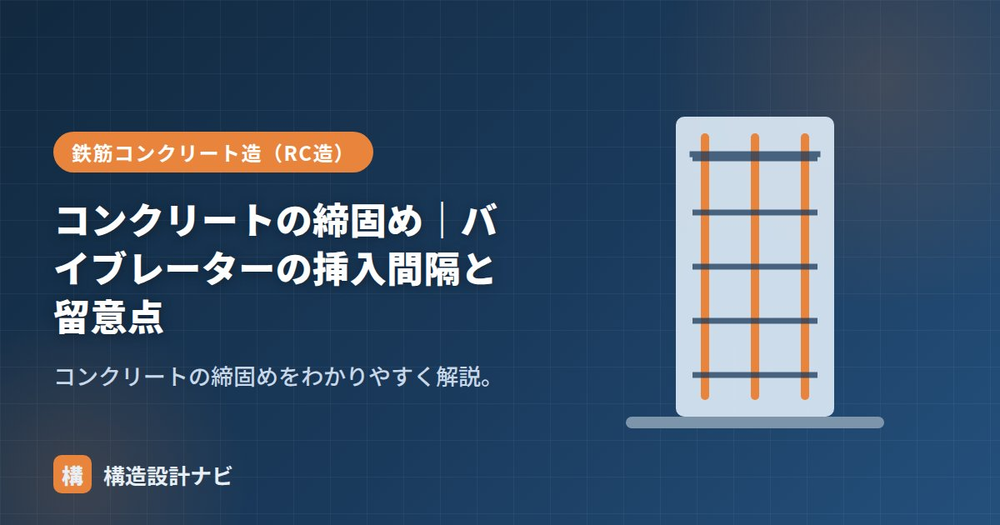

コンクリートの締固め｜バイブレーターの挿入間隔と留意点

締固め（しめがため）は、打ち込んだコンクリートを振動で密実にする作業です。空気を抜き、すみずみまで充填して強度・耐久性を確保します。棒形振動機（バイブレーター）を使うのが一般的で、打込みと一体で行う工程として品質管理上とても重要な作業です。
この記事の要点
- 締固めは振動によって余分な空気を追い出し、型枠・鉄筋のすみずみまで充填する作業。
- バイブレーターの挿入間隔は60cm以下、加振時間は1か所5〜15秒程度が目安。
- 横移動や過度の加振は材料分離（ブリーディング・骨材沈降）を招くため避ける。
目的
打ち込んだだけのコンクリートには、巻き込んだ空気や空隙が残ります。締固めで余分な空気を追い出し、型枠や鉄筋のすみずみまで充填することで、ジャンカ（豆板）や空隙のない密実なコンクリートにします。締固めが不十分だと、コンクリート内部に空隙が残って強度が低下するだけでなく、鉄筋の周りに水みちができて腐食（さび）を招く原因にもなります。
バイブレーター（棒形振動機）の使い方
POINT：挿入間隔と加振時間
- 挿入間隔は60cm以下。
- 加振時間は1か所5〜15秒程度（表面にペーストが浮き、気泡が出なくなるまで）。
- 鉛直に挿入し、下層に10cm程度差し込んで打ち重ね部を一体化する。
- 引き抜くときはゆっくり（穴が残らないように）。
加振の判断は、表面に気泡が出なくなり、粗骨材が沈んでセメントペーストが浮き上がってくることを目安にします。加振時間が短すぎると空隙が残り、長すぎると次項の材料分離を招くため、感覚だけに頼らず標準的な時間・間隔を守ることが大切です。
留意点・品質管理
- 鉄筋・型枠に振動機を当てない（はく離・型枠破損）。
- 横移動に使わない（材料分離する）。
- かけすぎ注意：過度の加振は骨材沈降・ブリーディングなど材料分離を招く。
- 打ち重ねの時間間隔にも注意し、先に打ったコンクリートが固まり始める前に締固めを行い一体化させる。
その他の締固め方法
棒形振動機のほかに、薄い部材や型枠面の仕上げには型枠に取り付けて外側から振動させる型枠バイブレーターや、平面的な床スラブの表面をならしながら締め固めるタンパー・レベリング機が使われることもあります。部材の形状や配筋の密度に応じて、適切な締固め方法を選定します。
実務のワンポイント
柱の配筋検査では、密な帯筋のせいでバイブレーターが差し込みきれず、加振時間を稼げていない現場をよく見ます。図面上の間隔だけを守っても実際に締固まっているとは限らないので、私は打設中に打音や表面の気泡の出方を見て、その区画だけ再加振を指示することがあります。
まとめ
- 締固めは振動で空気を抜き密実にする作業。ジャンカ・空隙を防ぐ。
- 挿入間隔60cm以下、加振5〜15秒、下層に10cm差し込み一体化。
- 鉄筋・型枠に当てず、横移動・かけすぎは材料分離を招く。
- 部材形状に応じ型枠バイブレーターなど別の方法を併用することもある。